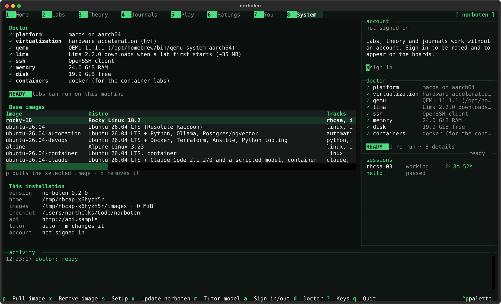
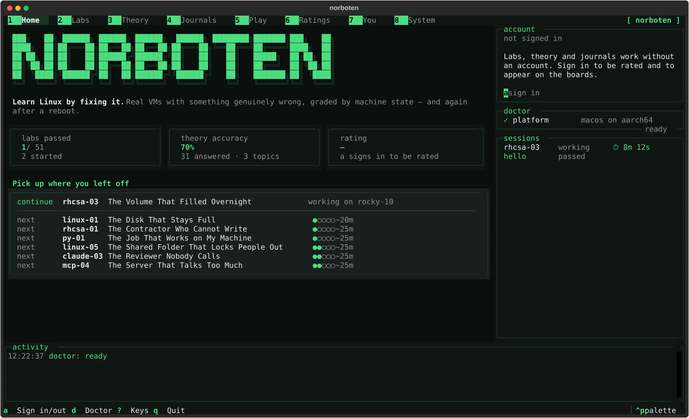
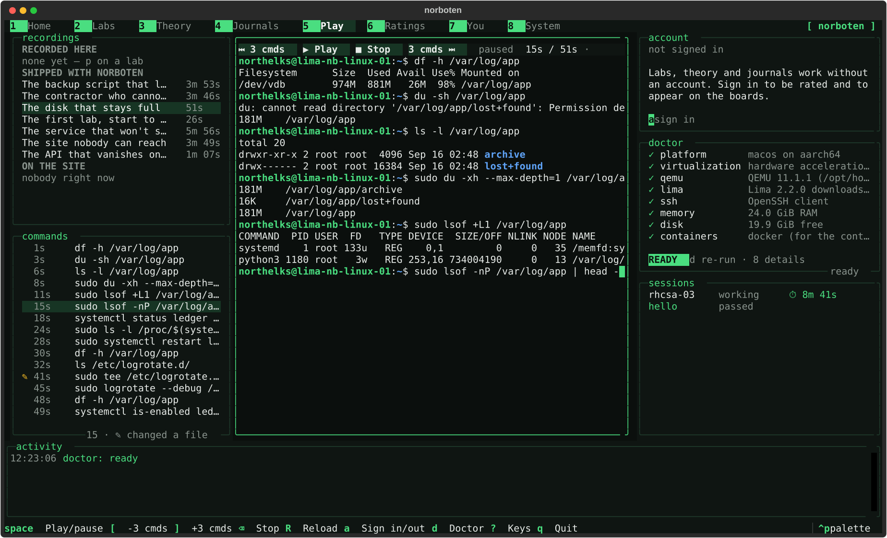
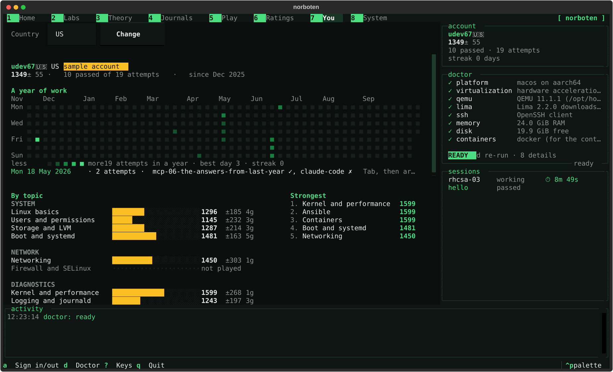

Norboten boots a real Linux VM on your machine with something genuinely wrong with it. A service will not start. A disk will not mount. SELinux is quietly denying a request. You find it and fix it — and then the machine is graded, rebooted, and graded again.

You do not learn systemd by reading about systemd. You learn it at 2 a.m., when a unit will not start and the journal is the only thing that knows why. Norboten is that moment, on demand: 51 labs that each break a real virtual machine in a specific, realistic way, and grade you on the state of the machine afterwards.
Nothing is multiple choice about the lab itself. There is no answer field. The lab is passed when the system behaves, and it only counts when the fix is still there after a reboot — the way the RHCSA exam does it, and the way production does it.
Most of the catalogue is unrated: those labs run entirely on your machine, need no account, and their faults, checks and reference solutions are in the repository for you to read — for learning, the solution is often the clearest explanation a lab has. Rated labs are the other half: they are graded by the server, their answers are not published, and they are what the boards are made of. The first ones are still being written, so today every lab is unrated. How that works.
norboten opens one full-screen interface: labs, theory, journals, recordings and your profile, eight sections along the top on the keys 1 to 8 (the arrows walk them too). These are the real screens, rendered by the app itself.



Norboten's labs, questions and journals are written with norboten-author, a
Claude Code plugin in the same repository. Give it an idea: it asks what the lab
specification needs and the idea leaves open, shows a plan, and after your yes drafts it —
in your session, or in a subagent. It is finished when the solvability gate or the
question pipeline says so, not when the files look right.
/plugin marketplace add northelks/norboten
/plugin install norboten-author@norbotenOne lab that runs on every base image — the whole path, in five minutes.
1 lab · alpine · rocky-10 · ubuntu-26.04
General troubleshooting and shell work on lighter images: Ubuntu 26.04 and Alpine.
6 labs · alpine · ubuntu-26.04 · ubuntu-26.04-container
Five labs on Rocky Linux 10, grounded in the current EX200 objectives, ending in a timed exam simulation.
5 labs · rocky-10
Two deploy-day scripts, graded by running them against the grader's own directories: error handling, quoting, atomic switches, safe deletion.
7 labs · ubuntu-26.04-devops
A sync job that lied about its failures and a tool only root could run: exit status, timeouts, atomic writes, virtual environments.
7 labs · ubuntu-26.04-devops
A Python job, an AI gateway, an agent that never stopped, and Ollama four ways — deployed, exposed, starved of context and memory, and secured.
7 labs · ubuntu-26.04-automation
Headless Claude Code as a machine runs it: permission rules, hooks, subagents, MCP servers and CI jobs that stay inside a budget.
6 labs · ubuntu-26.04-claude
Model Context Protocol servers as Claude Code meets them: what a server exposes, tool results that give orders, tokens for someone else, a chatty stdio server, a proxy that holds the stream, and scopes that disagree.
6 labs · ubuntu-26.04-claude
A playbook that never converges and a deploy stuck at a vault prompt: idempotence, variable precedence, Vault without a keyboard.
2 labs · ubuntu-26.04-devops
A queue that lost its jobs at every reboot and a Compose stack that could not find its API: volumes, published ports, networks, restart policies.
2 labs · ubuntu-26.04-devops
A rename that would regenerate a secret and a site removed from the middle of a list: moved blocks, drift, for_each, state hygiene.
2 labs · ubuntu-26.04-devops
Base images are downloaded only when a lab needs one, and cached after that: Alpine 110 MiB, Rocky 10 814 MiB, Ubuntu 26.04 663 MiB — 932 MiB with the devops tools, 1141 MiB with the automation and AI ones. Measured on the images the gate runs, 2026-09-16.
10 topic banks and a bank for each of 51 labs — 610 questions in all, each with an explanation and a reference. Questions about what a command prints are executed in a sandbox before they are allowed into a bank (96 so far). And 62 journals, one for every lab and for the topics no lab covers, each walked through on a real machine.
Idempotence, modules, variables and handlers — configuration you can run twice.
41 questions
Expansion, quoting, exit status and the traps that make scripts lie.
42 questions · 34 executed
Claude Code as a machine runs it — headless runs, permissions, settings levels, hooks, subagents, MCP servers, CLAUDE.md, CI jobs and what they cost — and the habits that keep any AI agent on a short leash.
42 questions · 4 executed
Users, permissions, processes, files and boot — the everyday mechanics of a Linux system.
42 questions · 7 executed
MCP as a machine runs it — the two transports, the stateless 2026-07-28 revision, what a server exposes, tool results as untrusted input, OAuth 2.1 for remote servers, and the way Claude Code picks which server to run.
40 questions
Virtual memory, the page cache, processes and scheduling — computer science as Linux shows it.
43 questions · 7 executed
Addresses, routes, sockets, name resolution and firewalls — from a Linux shell.
41 questions · 6 executed
Running language models on your own machine with Ollama — the service, the API, Modelfiles, context windows, memory, keep-alive, embeddings and exposing it safely — and what local models are good for.
40 questions · 3 executed
The Python that automation scripts are made of — and the surprises in it.
42 questions · 34 executed
State, plans and the lifecycle of infrastructure described as code.
41 questions · 1 executed
The mechanism, one failure walked through, the wrong turns people take, a cheat sheet and review questions.
62 journals · 138,905 words
QEMU through Lima, a real kernel, real LVM, real SELinux. Root recovery from the bootloader and a fix that has to survive a reboot are impossible in a container, so Norboten does not pretend otherwise.
No answer box. Check scripts run as root inside the guest and report what they observed — "nothing is listening on port 8090", not "wrong".
Every VM lab is checked, rebooted, and checked again. A fix that works until the next boot is not a fix, and this is the single detail most practice platforms skip.
It sees the same evidence you do, never the solution, and points at the tool you have not used yet — on your own Claude Code, key or Ollama. You choose when the hints get more specific.
Every lab, on every base image it supports, must break every check and then be fixed by its own reference solution — or it cannot merge.
Images and labs are cached locally; no host directory is ever mounted into a lab VM; everything lives under ~/.norboten and deleting it leaves nothing behind.
A lab that cannot be solved by its own reference solution cannot merge. For every lab and every base image it supports, CI boots a clean VM, injects the faults, asserts that every check fails, runs the reference solution, then grades the machine, reboots it and grades it again — and every check has to pass in both passes.
That gate is the reason the hints can be honest about what is wrong, and the reason a lab that stops working after an upstream update becomes a failing build instead of a frustrated learner.
The install script puts one command on your machine, norboten, and its own pinned copy of Lima and QEMU under ~/.norboten. The first lab pulls a 110 MiB Alpine image, boots it, takes a clean snapshot and then breaks the machine: about 27 s the first time on a clean machine, Lima's own download included, and 21.8 s for an Ubuntu lab once its image is cached. Both measured, not rounded up from a guess.
You get a briefing with symptoms and no answers, and a root shell on a machine that is genuinely wrong. When you think it is fixed, c grades the machine, reboots it and grades it again: a fix that does not survive the boot is not a fix. r puts the machine back to the snapshot in about ten seconds, as often as you like.
Nothing of yours is inside it: no host directory is mounted, no port is forwarded, and everything the tool ever writes is under ~/.norboten — delete that directory and nothing is left behind.